Im Menüpunkt…
1 Erfassen
1 E-Billing
1 Export
… können Fakturen im "standardisierten XML-Format (ebInterface)", im "PDF-Format", im "standardisierten XML-Format (ebInterface)"+zusätzlichem "PDF-Format" oder mittels XML-Exportvorlage erzeugt und falls erforderlich auch signiert werden. Die Belege können vor dem Erstellen, bzw. anschließendem Signieren zur Kontrolle am Bildschirm dargestellt werden, und als weiterer Schritt kann ein automatischer Mailversand - z.B. via Postausgangsbuch - der (signierten) Rechnungen erfolgen.
Weiters besteht in diesem Menüpunkt die Möglichkeit, folgende Belege zu erzeugen: unsignierte XML-Dateien für "Angebote", "Aufträge" und "Lieferscheine", sowie Fakturen im, für E-Rechnungen an den Bund bzw. E-Rechnungen an die BBG adaptierten ebInterface-Format.
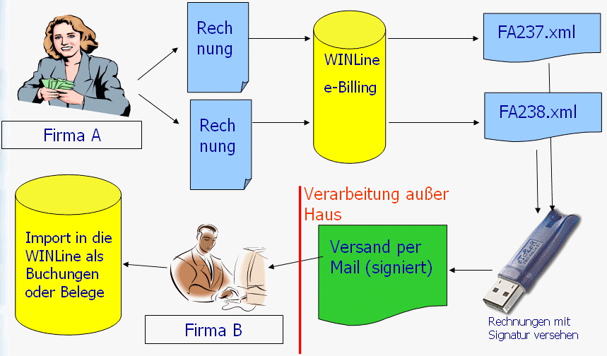
Weiters können verschiedene Einstellungen zu EBInvoice hinterlegt werden.
Damit die Menüpunkte…
1 E-Billing / Export und
1 E-Billing / Import (mit Signaturprüfung)
… geöffnet werden können muss die Datei "mct.exe im WinLine-Programmverzeichnis vorhanden sein. Ist dies nicht der Fall wird eine entsprechende Meldung ausgegeben (und die Datei muss entsprechend ins Programmverzeichnis kopiert werden).
Weiters wird eine entsprechende Meldung ausgegeben, wenn in den EBInvoice-Einstellungen noch kein Stylesheet hinterlegt ist. Dies sollte ggfs. kontrolliert und korrigiert werden.
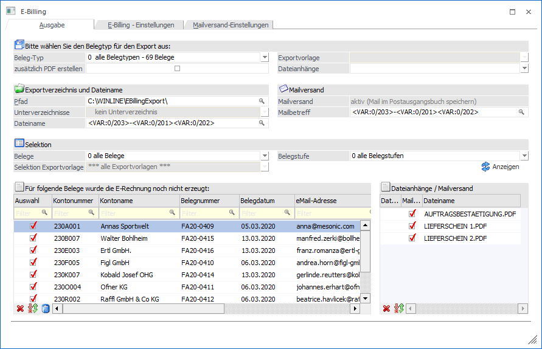
Register "Ausgabe"
In diesem Register werden die auszugebenden/zu signierenden und ggfs. zu versendenden Belege unterteilt in 16 Bereichen angezeigt:
ü 0 alle Belegtypen - in diesem Bereich werden alle zu "exportierenden" Belege dargestellt. Mit dieser Auswahl können somit unterschiedliche Belegtypen in einem Durchlauf exportiert werden.
ü 1 EBInvoice (signiert) - hier befinden sich die Belege jener Personenkonten, die im jeweiligen Rechnungsbeleg das Kennzeichen "1 EBInvoice (signiert)" hinterlegt haben. Nach erfolgreicher Ausgabe mit dieser Einstellung, werden signierte XML-Dateien (im "EB-Invoice-Format") erzeugt.
ü 2 EBInvoice (unsigniert) - hier befinden sich die Belege jener Personenkonten, die im jeweiligen Rechnungsbeleg das Kennzeichen "2 EBInvoice (unsigniert)" hinterlegt haben.
ü 3 XML-Exportvorlage - hier befinden sich die Belege jener Personenkonten, die im jeweiligen Rechnungsbeleg das Kennzeichen "3 XML-Exportvorlage" hinterlegt haben.
ü 4 PDF-Ausgabe (signiert) - hier befinden sich die Belege jener Personenkonten, die im jeweiligen Rechnungsbeleg das Kennzeichen "4 PDF-Ausgabe (signiert)" hinterlegt haben. Nach erfolgreicher Ausgabe mit dieser Einstellung werden signierte PDF-Dateien erzeugt.
ü 5 EBInvoice (signiert) + PDF-Ausgabe (unsigniert) - hier befinden sich die Belege jener Personenkonten, die im jeweiligen Rechnungsbeleg das Kennzeichen "5 EBInvoice (signiert) + PDF-Ausgabe (unsigniert)" hinterlegt haben. Nach erfolgreicher Ausgabe mit dieser Einstellung, werden signierte XML-Dateien sowie unsignierte PDF-Dateien erzeugt.
ü 6 XML-Exportvorlage (signiert) - hier befinden sich die Belege jener Personenkonten, die im jeweiligen Rechnungsbeleg das Kennzeichen "6 XML-Exportvorlage (signiert)" hinterlegt haben. Nach erfolgreicher Ausgabe mit dieser Einstellung, werden signierte XML-Dateien erzeugt (unter Verwendung der entsprechenden XML-Exportvorlagen).
ü 8 -10 XML-Exportvorlage (Angebote, Aufträge, Lieferscheine) - hier befinden sich die Belege jener Personenkonten, die im jeweiligen Rechnungsbeleg das Kennzeichen "8, 9 oder 10 XML-Exportvorlage Angebote, Aufträge, oder Lieferscheine" hinterlegt haben.
ü 11 PDF-Ausgabe (unsigniert) - hier befinden sich die Belege jener Personenkonten, die im jeweiligen Rechnungsbeleg das Kennzeichen "11 PDF-Ausgabe (unsigniert)" hinterlegt haben.
ü 12 EBInvoice (E-Rechnungen an den Bund) - hier befinden sich die Belege jener Personenkontenstamm, die im jeweiligen Rechnungsbeleg das Kennzeichen "12 EBInvoice (E-Rechnungen an den Bund)" hinterlegt haben.
ü 13 EBInvoice (E-Rechnungen BBG) - hier befinden sich die Belege jener Personenkontenstamm, die im jeweiligen Rechnungsbeleg das Kennzeichen "13 EBInvoice (E-Rechnungen BBG)" hinterlegt haben.
ü 14 EBInvoice (unsigniert) + PDF-Ausgabe (unsigniert) - hier befinden sich die Belege jener Personenkonten, die im jeweiligen Rechnungsbeleg das Kennzeichen "14 EBInvoice (unsigniert) + PDF-Ausgabe (unsigniert)" hinterlegt haben. Nach erfolgreicher Ausgabe mit dieser Einstellung, werden unsignierte XML-Dateien sowie unsignierte PDF-Dateien erzeugt.
ü 15 XRechnung - hier befinden sich die Belege jener Personenkonten, die im jeweiligen Rechnungsbeleg das Kennzeichen "15 XRechnung" hinterlegt haben.
ü 16 ZUGFeRD/Factur-X - hier befinden sich die Belege jener Personenkonten, die im jeweiligen Rechnungsbeleg das Kennzeichen "16 ZUGFeRD (XML)" hinterlegt haben (Ausgabe nur der XML-Datei).
ü 17 ZUGFeRD/Factur-X (PDF inkl. XML) hier befinden sich die Belege jener Personenkonten, die im jeweiligen Rechnungsbeleg das Kennzeichen "17 ZUGFeRD/Factur-X (PDF inkl.XML)" hinterlegt haben (Ausgabe als PDF-Datei mit eingebetteter XML).
Durch Auswahl des gewünschten Eintrages aus der Auswahllistbox (und Bestätigung mittels Enter-Taste) und drücken des "Anzeigen"-Buttons werden die zugehörigen Belege in der Tabelle im unteren Bereich des Fensters dargestellt.
Ø Zusätzlich PDF erstellen
Durch Aktivieren dieser Option kann für alle Exporttypen, für die keine PDF-Datei vorgesehen ist (XML-Exporttypen), zusätzlich zur eigentlichen Datei eine PDF-Datei erzeugt werden. Das erzeugte PDF-Dokument wird mit einem Wasserzeichen "KOPIE" versehen.
Es wird für die XML- und die PDF-Datei (abgesehen von der Dateierweiterung) derselbe Dateiname verwendet. Listbilder aus dem Beleg werden hierbei berücksichtigt.
Beim Versand der Dateien per Mail (Einstellung = "Mail sofort versenden") wird die zusätzlich erzeugte PDF-Datei berücksichtigt und in weiterer Folge z.B. auch in den "Gesendet-Ordner" verschoben.
Die Option wird pro Exporttyp gespeichert.
Ø Exportvorlage
Zum Export via XML-Exportvorlage kann aus der Auswahllistbox eine Exportvorlage gewählt werden. Für den Bereich "XML-Exportvorlage (signiert)" muss diese XML-Exportvorlage das Exportkennzeichen "10 Signatur hier einfügen" zugewiesen haben:
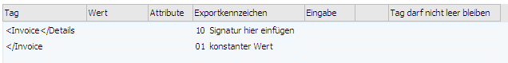
Zusätzlich zu den auswählbaren Exportvorlagen steht auch der Eintrag "*** Exportvorlage lt. Beleg ***" zur Verfügung. Mit dieser Auswahl kann anstelle der fix ausgewählten Vorlage, die Vorlage aus dem Beleg (aus dem Kontenstamm oder aus der Belegart übernommen) verwendet werden. Diese Auswahl ist für den Beleg-Typen "0 alle Belegtypen" nicht auswählbar. Hier wird für Beleg-Typen mit Vorlage immer die Vorlage aus dem Beleg verwendet.
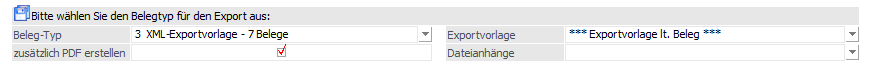
Ø Dateianhänge
Aus dieser Auswahllistbox kann eine Exportvorlage gewählt werden, die für den Export von Dateianhängen (z.B. Dokumente die im Belegerfassen-Hauptfenster mittels Drag & Drop auf den Beleg gezogen wurden) verwendet werden soll.
D.h. zusätzlich zum Beleg im XML-Format (z.B. "230A001-FA-2340_Exportvorlage.XML") wird nun eine zweite Datei ("230A001-FA-2340_Exportvorlage_Dateianhang.XML") erzeugt. Wurde kein "Archivdokument" ausgewählt (siehe dazu unter "Tabelle mit Dateianhängen") so wird auch keine zusätzliche Datei erzeugt. Gleich wie beim EBInvoice-Export werden auch hier beide XML-Dateien archiviert und können sofort per Mail versandt werden.
Die Exportvorlagen für Dateianhänge müssen die Exportkennzeichen "11 Dateianhang hier einfügen" und "12 Dateianhang" hinterlegt haben:
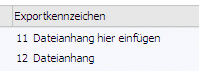
Ø Exportverzeichnis und Dateiname / Pfad
Im Eingabefeld "Pfad" kann ein Verzeichnis angegeben werden, in das die exportierten Belege abgestellt werden.
Beim erstmaligen Aufruf des Menüpunktes bzw. der jeweiligen Belegtypen werden standardmäßig für die verschiedenen Bereiche je ein Unterverzeichnis des Programmverzeichnisses als Speicherort vorgeschlagen.
Beispiel:
- Installationspfad der WinLine: C:\WinLine
- Vorschlag für Speicherort für Belege des Bereiches "EBInvoice(signiert):
C:\WinLine\EBInvoice_signed\
- Vorschlag für Speicherort für Belege des Bereiches "PDF-Ausgabe(signiert):
C:\WinLine\PDF\
- Vorschlag für Speicherort für Belege des Bereiches "EBInvoice(signiert) + PDF-Ausgabe(unsigniert):
C:\WinLine\ebInvoicePDF\
- Vorschlag für Speicherort für Belege des Bereiches "alle Belegtypen":
C:\WinLine\EBillingExport\
Unterhalb dieser Verzeichnisse können beim Signieren wieder Unterverzeichnisse (automatisch) angelegt werden. Diese Verzeichnisse können sein:
Fehler, Gesendet, zu Signieren, Signiert.
ü Fehler: Sollte es beim Signieren zu einem Fehlerfall kommen (ungültige Signatur o.ä.) wird die Datei in den Ordner "Fehler" verschoben.
ü Gesendet: werden signierte Rechnungen "sofort" per Mail - via Postausgangsbuch - versandt, so werden die signierten Dateien in den Ordner "Gesendet" verschoben.
ü zuSignieren: Dokumente die signiert werden müssen, werden in diesem Ordner abgelegt, und in weiterer Folge in den Ordner "Signiert" bzw. "Fehler" verschoben.
ü Signiert: werden Rechnungen im Postausgangsbuch zum späteren Versand abgelegt, so werden die erzeugten Dateien im Ordner "Signiert" abgelegt.
Ø Unterverzeichnisse
Zusätzlich zum Ausgabepfad kann ein weiteres "Unterverzeichnis" zur Ablage verwendet werden (steht nur dann zur Verfügung wenn in den Mailversand-Einstellungen die Option "kein Mailversand" aktiviert ist). Über die Auswahllistbox kann bestimmt werden ob,
- Auswahl "Kontonummer": für jede vorhandene Personenkontonummer ein Unterverzeichnis mit der Kontonummer als Verzeichnisnamen erzeugt/verwendet werden soll.
- Auswahl "Zusatzfelder": ein Unterverzeichnis mit dem Inhalt des angegebenen Zusatzfeldes (pro Personenkonto) erzeugt/verwendet werden soll. Ist der Inhalt des verwendeten Zusatzfeldes leer, so wird die Personenkontonummer als Verzeichnisname verwendet.
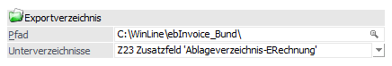
Ø Dateiname
In diesem Feld kann der Dateiname aus Texten bzw. Variablen dynamisch zusammengesetzt werden. Zur Suche bzw. Auswahl der Variablen steht der Matchcode zur Verfügung. Zu beachten ist hierbei, dass der Matchcode in diesem Fall den zuvor enthaltenen Wert des Feldes nicht ersetzt, sondern die neue Variable hinzufügt. Dieses Feld zur Definition des Dateinamens ist nicht anwählbar, wenn der Beleg-Typ "11 PDF Ausgabe (unsigniert) gewählt wurde, und die Option "Formtitle als Dateiname verwenden" aktiviert ist. Ebenso steht dieses Feld für Beleg-Typen "13 E-Rechnung an BBG" nicht zur Verfügung.
Kommt es durch die Hinterlegung zu Dateinamen die nicht eindeutig sind, so wird an einen bereits bestehenden Dateinamen ein "Zähler" angehängt.
Hinweis
Beim Archivieren der erzeugten Dateien wird die Bezeichnung des jeweiligen Exporttyps verwendet. Für Exporttypen mit, für den einzelnen Export ausgewählter Exportvorlage, wird diese in Klammern hinzugefügt. Im Falle eines exportierten Dateianhanges in einer eigenen Datei wird der Text "Dateianhang" und wiederum in Klammern die verwendete Vorlage hinzugefügt.
Ø Mailversand / Mailbetreff
Im Feld Mailversand wird angezeigt, ob der Mailversand aktiviert ist bzw. welche Art des Mailversandes eingestellt ist.
Im Feld "Mailbetreff" kann dieser aus Texten bzw. Variablen dynamisch zusammengesetzt werden. Zur Suche bzw. Auswahl der Variablen steht der Matchcode zur Verfügung. Zu beachten ist hierbei, dass der Matchcode in diesem Fall den zuvor enthaltenen Wert des Feldes nicht ersetzt, sondern die neue Variable hinzufügt. Das Feld für die Definition des Mailbetreffs ist nicht anwählbar, wenn der automatische Mailversand nicht aktiviert ist. Ebenso ist dieses Feld für Beleg-Typen"12 E-Rechnung an den Bund" und "13 E-Rechnung an BBG" nicht verfügbar.
Ø Dateianhänge / Mailversand
Der Bereich der Dateianhänge/Mailversand ist dann verfügbar wenn:
ü der Mailversand inkl. Option "Versand inkl. Anhänge" aktiviert ist und der Exporttyp einen Mailversand ermöglicht oder
ü wenn ein Exporttyp mit Vorlagen ausgewählt ist und eine Vorlage mit Dateianhang vorhanden ist.
Zur Auswahl der Dokumente stehen eigene Checkboxen für die Verwendung als Dateianhang oder als Mail-Anhang zur Verfügung.
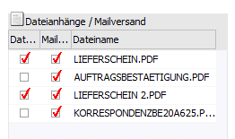
Ø Dateianhänge
Die Checkbox für den Dateianhang wird angezeigt für Beleg-Typen mit Vorlage, wenn:
ü für den einzelnen Beleg eine Vorlage mit Dateianhang ausgewählt ist oder
ü eine Vorlage für einen Dateianhang in einer eigenen XML ausgewählt ist.
Dementsprechend wird bei Änderung der Exportvorlage für den Beleg die Tabellen mit den Dokumenten aktualisiert.
In dieser Tabelle selbst werden alle Archivdokumente zum aktiven Beleg angezeigt. Wird nun bei einem Dokument die Checkbox in der Spalte "Dateianhang" aktiviert, so wird zur Beschlagwortung des Archivdokuments das Schlagwort "XML-Export" inkl. dem Archivwert "1" hinzugefügt. Im Gegensatz dazu wird der Wert (falls vorhanden) entfernt, wenn die Checkbox deaktiviert wird (dieses Schlagwort kann auch direkt im Archiv hinzugefügt oder entfernt werden). Beim Signieren und/oder Exportieren werden dann all jene Dokumente berücksichtigt bei denen für das Schlagwort "055 XML-Export" ein Wert hinterlegt ist; d.h. die Checkbox aktiviert ist.
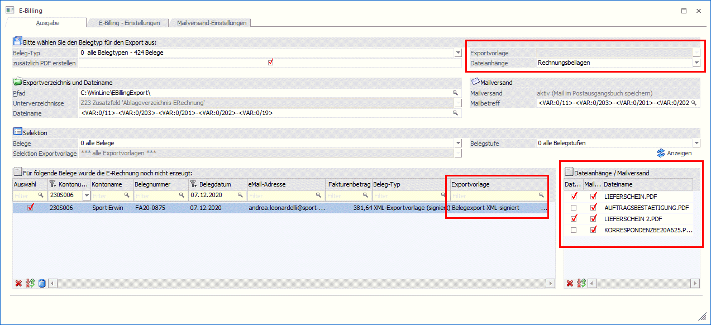
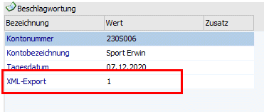
Ø Mailversand
Die Checkbox für den Mailversand wird angezeigt, wenn der Mailversand inkl. Option "Versand inkl. Anhänge" aktiviert ist und der Mailversand für den Beleg-Typ des Beleges grundsätzlich möglich ist.
In der Tabelle werden zum jeweiligen Beleg jene Dokumente angezeigt, die dem Beleg als "Archiveintrag" zugeordnet wurden.
Automatisch ist bei den Dokumenten die Checkbox in der Spalte "Mailversand" aktiviert; damit wird festgelegt, dass diese Dokumente auch beim Mailversand berücksichtigt, d.h. mit verschickt werden. Um Dokumente vom Mailversand auszuschließen, muss die Option "Auswahl" deaktiviert werden.
Ø Selektion
Dieser Bereich ist für den Beleg-Typ "0 alle Belegtypen" sowie für alle Beleg-Typen mit Exportvorlage aktiv.
Aus der Auswahllistbox kann gewählt werden, ob:
ü alle Belege
ü nur Belege mit vollständigen Einstellungen (d.h. alle Belege mit Exporttypen ohne Vorlage und jene mit Exporttypen mit Vorlage, für die eine Vorlage zugeordnet ist)
ü nur Belege mit dementsprechenden unvollständigen Einstellungen
ü nur Belege mit Exportvorlage
angezeigt werden sollen.
Bei Auswahl der "Belege mit Exportvorlage" kann mittels weiterer Auswahllistbox auf eine Exportvorlage eingeschränkt werden. Als Standardwert ist hier "alle Exportvorlagen" ausgewählt.
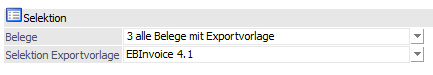
Ø Belegstufe
Für die Beleg-Typen "0 alle Belegtypen", "4 PDF-Ausgabe (signiert)" und "11 PDF-Ausgabe (unsigniert) - also jene Beleg-Typen die unterschiedliche Belegstufen betreffen können - steht diese Auswahllistbox zur weiteren Selektion der Belegstufe zur Verfügung.
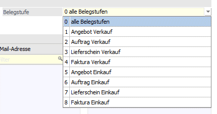
Tabellenbuttons
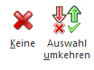
Die Tabellenbuttons "Keine/"Umkehren" wirken auf beide Checkboxen in der Tabelle bzw. auf jene die lt. Optionen möglich sind und angezeigt werden.
Ø Keine
Durch Anwählen dieses Buttons wird die Optionen "Auswahl" der einzelnen Zeilen entfernt.
Ø Auswahl umkehren
Durch Anwählen des Buttons "Auswahl umkehren" werden alle selektierten Checkboxen deselektiert und umgekehrt.
Ø Belegtabelle
In der Belegtabelle werden die einzelnen Belege des jeweiligen Bereiches aufgelistet.
Durch Aktivieren der Checkbox "Auswahl" kann bestimmt werden ob der Beleg in weiterer Folge exportiert werden soll oder nicht.
Zur Information werden die Werte Kontonummer, Kontoname, Belegnummer, Belegdatum sowie der Betrag, der Beleg-Typ sowie die Exportvorlage angezeigt.
Hinweis:
In der Tabelle können für einen Durchlauf max. 99 unterschiedliche Exportvorlagen verwendet werden.
In der Spalte "eMail-Adresse" wird jene Adresse vorgeschlagen die im Personenkonto/Register FAKT im Feld "E-Mail-Adresse für den Rechnungsversand" angegeben ist.
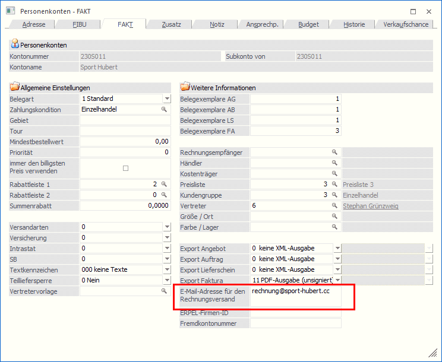
Diese Adresse kann individuell geändert werden bzw. aus der Auswahllistbox eine jener Adressen ausgewählt werden, die im Personenkonto bei einem Ansprechpartner hinterlegt ist. Ebenso steht die Mailadresse aus dem Personenkonto zur Auswahl:
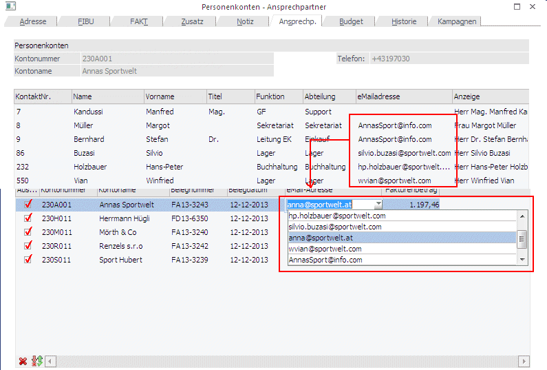
Hinweis
Ist im Register "Mailversand-Einstellungen" die Option "An selben Empfänger" aktiviert, so wird die Spalte "eMail-Adresse" nicht angezeigt.
Ist lt. Einstellung im Register "Mailversand-Einstellungen" der Mailversand aktiviert - also die Einstellung "1 Mail sofort senden" oder "2 Mail im Postausgangsbuch speichern" - so wird beim Erstellen/Signieren der Belege geprüft, ob eine Mailadresse angegeben ist, bzw. ob diese auch gültig ist (z.B. darf die Mailadresse nicht mit dem @-Zeichen beginnen oder enden). Im Fehlerfall wird der Beleg nicht erzeugt und eine entsprechende Meldung ausgegeben.
Die Belegtabelle kann nach den Spalten sortiert werden bzw. steht die Filterzeile zur weiteren Selektion zur Verfügung.
Mittels Doppelklick auf eine Belegzeile kann (analog zur Tabelle mit den Dateianhängen) der Archiveintrag des entsprechenden Beleges angezeigt werden (dabei wird der Button "Belege anzeigen" aktiviert).
Buttons
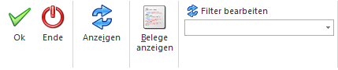
Ø Ok
Durch Drücken des OK-Buttons (im Register "Ausgabe") wird das Erzeugen, ggfs. das Signieren der Dateien, das Ablegen im Archiv, sowie ein event. Mailversand gestartet.
Hinweis
Als "Quelle" für die zu exportierenden Belege wird der Eintrag aus dem Autoarchiv der jeweiligen Belegstufe herangezogen. Also nicht jenes Dokument das als eigentlicher Archiveintrag abgelegt wurde. Im Falle dass kein "Autoarchiveintrag" vorhanden ist, wird jener Beleg verwendet, der als Archivdokument zum Beleg gespeichert ist.
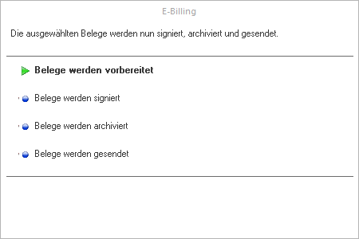
Je nach verwendeter Hardware muss zum Signieren der Datei eine Eingabe des PIN's (Passwortes) erfolgen.
Beispiel "eToken" von "Aladdin"
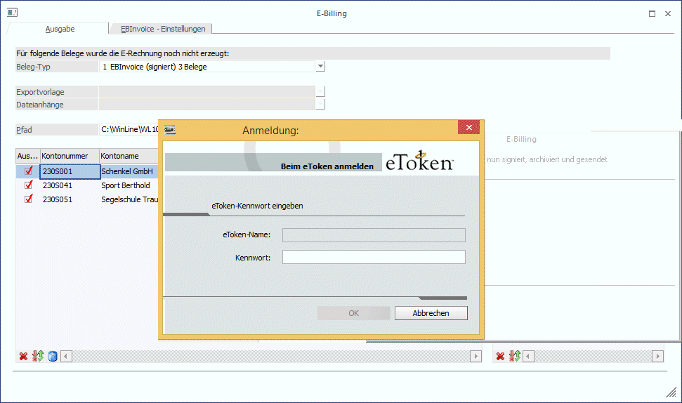
Es wird nur eine einmalige Eingabe des Passwortes benötigt um alle gewählten Dokumente zu signieren (Vorteil der fortgeschrittenen Signatur).
Nach erfolgreichem Vorgang (Erzeugen von Dateien, Signieren von Dateien) werden diese Dokumente im jeweiligen Format (XML und/oder PDF) im angegebenen Verzeichnis abgelegt. Der Dateiname setzt sich - vorausgesetzt er wird nicht über das Eingabefeld "Dateiname" übersteuert - aus "Kundennummer", einem Bindestrich, der Belegnummer, und der entsprechenden Dateierweiterung zusammen. Im Falle von E-Rechnungen an die Bundesbeschaffung GmbH (mit der Einstellung "13-EBInvoice (E-Rechnung an BBG)") setzt sich der Dateiname aus der Belegnummer und der Dateierweiterung XML zusammen.
Hinweis
Enthält die Datei Sonderzeichen wie \ / : * ? " < > | so werden diese aus dem Dateinamen entfernt!
Zusätzlich werden die Belege - XML oder PDF - im Archiv abgelegt. Nicht archiviert werden PDF-Dokumente, die mit der Option "zusätzlich PDF erstellen" erzeugt wurden.
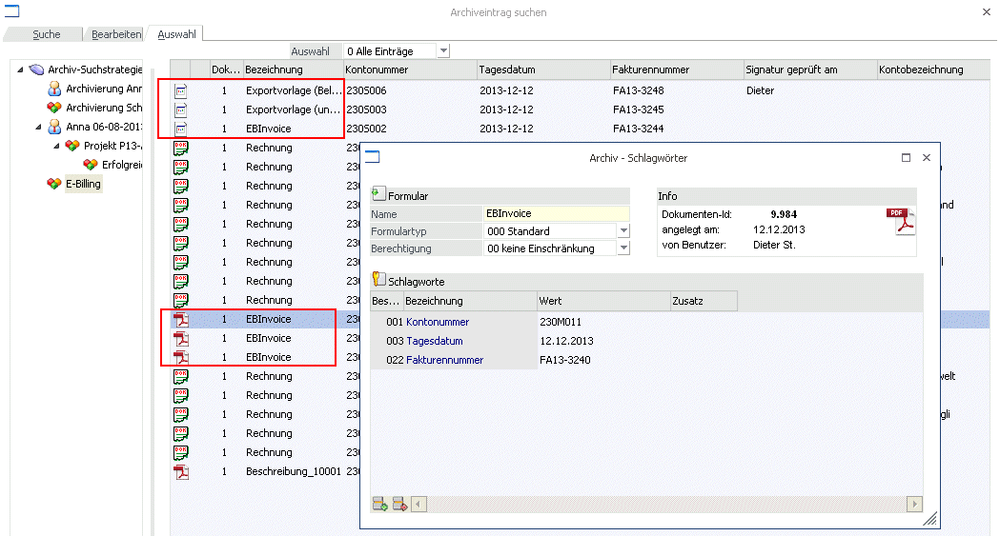
Als Schlagworte werden dazu "Dateiname" mit dem Eintrag "EBInvoice" bzw. "Exportvorlage" (inkl. Name der Vorlage) verwendet, sowie die Kontonummer, das Tagesdatum, die Fakturennummer, und "Signiert von" mit dem Eintrag der Signatur.
Ø Ende
Durch Drücken des Ende-Buttons wird das Fenster geschlossen. Alle getätigten, und nicht gespeicherten Eingaben werden dabei verworfen.
Ø Anzeigen
Zum Anzeigen der Belege in der Belegtabelle lt. Selektionskriterien muss der Button "Anzeigen" betätigt werden.
Ø Belege anzeigen
Damit vor dem Exportieren die Belege am Bildschirm betrachtet werden können, kann die Funktion "Belege anzeigen" aktiviert werden (nach Anwählen bleibt der Button aktiv bis er erneut angewählt wird). Ist die Funktion aktiviert so wird bei Anwählen einer Zeile der Tabelle der entsprechende Beleg dargestellt.
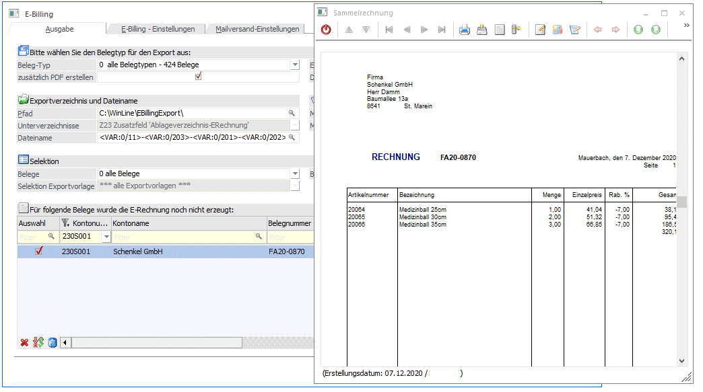
Ist eine Zeile aus der Tabelle der Dateianhänge aktiv, so wird das jeweilige Archivdokument dargestellt.
Ø Filter
Mittels Filter können Belege für die Anzeige bzw. späteren Export eingeschränkt werden. Zur Selektion der Belege stehen die Variablen zum Belegkopf bzw. zum Kontenstamm zur Verfügung.
Tabellenbuttons
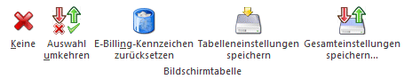
Ø Keine
Durch Anwählen dieses Buttons wird die Optionen "Auswahl" der einzelnen Zeilen entfernt.
Ø Auswahl umkehren
Beim Anwählen "Auswahl umkehren"-Buttons werden alle selektierten Zeilen deselektiert und umgekehrt.
Ø E-Billing-Kennzeichen zurücksetzen
Wird dieser Button angeklickt, so wird - nach vorheriger Sicherheitsabfrage - der Beleg dahingehend gekennzeichnet, als ob dieser bereits "exportiert" wäre. D.h. dieser Beleg wird aus der Tabelle entfernt.
Register "EBInvoice - Einstellungen"
In diesem Register können verschiedene Einstellungen, die zu "exportierende" Datei betreffend, hinterlegt werden. Einstellungen zum Dokumententitel, zu Bankverbindung, zur Signatur, usw..
Dazu gibt es die verschiedenen Bereiche.
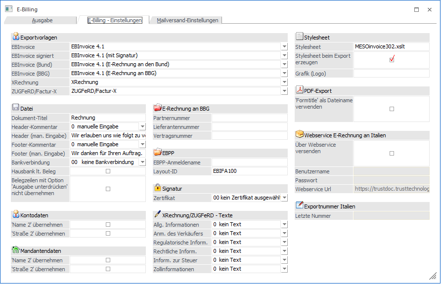
Exportvorlagen
Für die Beleg-, bzw. Exporttypen die Export-Vorlagen verwenden, können über die Auswahllistboxen die benötigten Vorlagen ausgewählt werden.
Zur Auswahl stehen hier (neben selbst definierten Vorlagen) folgende Vorlagen:
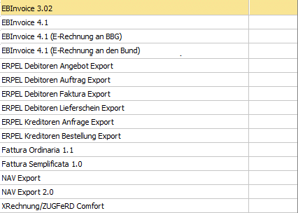
Zu diesen Vorlagen können im Menüpunkt "XML-Import/XML-Vorlagen" die einzelnen Definitionen angesehen werden. Ein Ändern oder Löschen dieser Vorlagen ist nicht möglich.
Datei
Ø Dokument-Titel / Header-Kommentar / Footer-Kommentar
In diesen Feldern können beliebige Texte vergeben werden die in weiterer Folge in die XML-Datei geschrieben werden.
Für den Header-Kommentar sowie für den Footer-Kommentar stehen zusätzlich zur Hinterlegung eines manuellen/fixen Wertes weitere Möglichkeiten zur Verfügung. Nachdem in EBInvoice-Dateien (z.B. E-Rechnungen an den Bund) keine Belegmittelteilszeilen des Typs3-Text übernommen werden können, besteht die Möglichkeit einer Textübergabe als "Header"-Text aus folgenden Feldern: Notizfeld 1-10 aus dem Belegerfassen/Register "Text", bzw. aus der ersten Belegmittelteilszeile sofern es sich um einen Zeilentyp 3-Textzeile handelt.
Ø Bankverbindung
Für die Erstellung einer Datei ist es zwingend erforderlich eine Bankverbindung anzugeben. Aus der Auswahllistbox können jene Banken gewählt werden, die im Bankenstamm angelegt sind.
Ø Hausbank lt. Beleg
Wird diese Option aktiviert und es wurde eine Hausbank im Beleg bzw. in der Belegart hinterlegt, wird diese Bankverbindung für die entsprechenden Exportvariablen herangezogen. Bei nicht gesetzter Option oder wenn keine Hausbank im Beleg eingetragen wurde, wird die Bank aus der Einstellung "Bankverbindung" verwendet.
Ø Belegzeilen mit der Option "Ausgabe unterdrücken" nicht übernehmen
Durch Aktivieren dieser Option werden Belegmittelteilszeilen (Artikelzeilen), die die Option "Ausgabe unterdrücken" gesetzt haben, nicht in die EBInvoice-Dateien übernommen.

D.h. bei folgenden Belegtypen hat diese Option Auswirkung:
ü 1 EBInvoice (signiert)
ü 2 EBInvoice (unsigniert)
ü 5 EBInvoice (signiert) + PDF-Ausgabe (unsigniert)
ü 12 EBInvoice (E-Rechnungen an den Bund)
ü 13 EBInvoice (E-Rechnungen BBG)
ü 14 EBInvoice (unsigniert) + PDF-Ausgabe (unsigniert)
Kontodaten
Ø Name 2 übernehmen
Durch Aktivieren der Checkbox wird festgelegt, dass bei ebInterface-Dateien der "Name2" zusätzlich zum eigentlichen Kontonamen in das entsprechende Feld in der ebInterface-Datei übernommen wird.
Ø Strasse 2 übernehmen
Durch Aktivieren der Checkbox wird festgelegt, dass bei ebInterface-Dateien die "Strasse2" zusätzlich zum eigentlichen Eintrag im Feld "Strasse" in das entsprechende Feld in der ebInterface-Datei übernommen wird.
Mandantendaten
Ø Name 2 übernehmen
Durch Aktivieren der Checkbox wird festgelegt, dass bei ebInterface-Dateien der "Firmenname2" (aus dem Mandantenstamm) zusätzlich zum eigentlichen Firmennamen in das entsprechende Feld in der ebInterface-Datei übernommen wird.
Ø Strasse 2 übernehmen
Durch Aktivieren der Checkbox wird festgelegt, dass bei ebInterface-Dateien die "Strasse2" (aus dem Mandantenstamm) zusätzlich zum eigentlichen Eintrag im Feld "Firmenanschrift" in das entsprechende Feld in der ebInterface-Datei übernommen wird.
E-Rechnung an BBG
In den Feldern
Partnernummer (Pflichtfeld in der XML-Datei)
Lieferantennummer
Vertragsnummer (Pflichtfeld in der XML-Datei)
müssen die jeweiligen Daten hinterlegt werden, die in weiterer Folge in der EBInvoice-Datei (XML-Datei) an BBG (Bundesbeschaffung GmbH) übergeben werden.
EBPP
Ø EBPP-Anmeldename
Für die Erstellung einer Datei mit der Option "2 EBInvoice unsigniert" ist es zwingend erforderlich einen "EBPP-Anmeldenamen" anzugeben. Dieser ist von der EBPP GmbH zu erhalten und in diesem Feld zu hinterlegen.
Ø Layout-ID
Die Layout-ID wird von der EBPP (GmbH) vorgegeben und sollte, ausgenommen es wird eine spezielle Vereinbarung mit der EBPP getroffen, immer die bereits vorbelegte ID verwendet werden (derzeit EBIFA100).
D.h. auch dass diese Einstellung nur Verwendung findet wenn der Belegexport mit der Option "2 EBInvoice unsigniert" vorgenommen wird und EBPP die Signatur und Archivierung durchführt.
Signatur
Ø Zertifikat
Zum Signieren von Fakturen im Menüpunkt "E-Billing/Export" wird ein Zertifikat benötigt. In der Auswahllistbox stehen jene Zertifikate zur Verfügung, die auf der jeweiligen Workstation installiert sind.
XRechnung/ZUGFeRD - Texte
Ø Allg. Informationen/Anm. des Verkäufers/Regulatorische Inform./Rechtliche Inform./Inform. zur Steuer/Zollinformationen
Diesen Feldern einer ZUGFeRD/ XRechnung können Texte in Form der 10 möglichen Textzeilen aus dem Belegkopf (Register Text) zugewiesen werden. In der Auswahllistbox stehen folgende Möglichkeiten zur Verfügung:
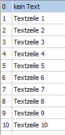
Stylesheet
Ø Stylesheet
In diesem Eingabefeld muss ein Stylesheet (xslt-Datei) angegeben werden womit die XML-Dateien im Browser als "Klartext" dargestellt werden können. D.h. dieser Eintrag ist fix in der XML-Datei hinterlegt.
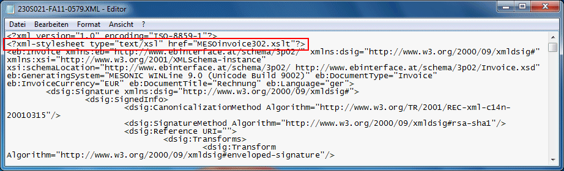

Ist das Stylesheet beim Öffnen der XML-Datei (im entsprechenden Verzeichnis) nicht vorhanden, so wird im Browser die XML-Struktur dargestellt.

Ø Stylesheet beim Export erzeugen
Zum Erzeugen eines Stylesheets muss diese Option aktiviert werden. Beim Export von XML-Dateien (ausgenommen sind hier die EBInvoice-Formate) wird das Stylesheet erzeugt und in der XML-Datei darauf verwiesen.
Ø Grafik (Logo)
In diesem Feld kann eine Internetadresse angegeben werden auf der sich die Grafikdatei befindet.
Z.B. https://meinefirma.com/EBPP_Files/firmenlogosmall.gif
Dies hat den Vorteil, dass jemand der eine exportierte Rechnung (XML-Datei) erhält und Zugriff auf das Internet hat, auch diese Datei automatisch angezeigt bekommt.
PDF-Export
Ø "Formtitle" als Dateiname verwenden
Durch Aktivieren dieser Option wird der Name des Dokuments, der mit der Funktion "FormTitle=" im entsprechenden Rechnungsformular erzeugt wurde bzw. über die Seiteneinstellungen des Formulars definiert ist, als Dateiname für den Export verwendet.
Beim Export wird diese Einstellung bei den "Beleg-Typen" 4-PDF-Ausgabe signiert bzw. 11-PDF-Ausgabe unsigniert verwendet.


Sollte durch die Einstellung des Dokumentennamens es zu gleichen Dateinamen kommen, so wird an den Dateinamen ein hochlaufender Zähler angehängt (z.B. "Rechnung (1)").
Webservice E-Rechnung an Italien (um diesen Bereich nutzen zu können, muss die entsprechende Lizenz "eBilling IT" vorhanden sein)
Ø Über Webservice versenden
Durch Aktivieren dieser Checkbox können E-Rechnungen an den "italienischen Bund" erzeugt und übermittelt werden. Wird diese Option aktiviert, so werden die nachfolgenden Felder "Benutzername" und Passwort" zur Eingabe freigeschalten".
Hinweis
Übermittelt werden für den Bereich "eBilling IT" und Webservice nur Belege mit dem Exporttyp "3 XML-Exportvorlage". Bei allen Exporttypen erfolgt ein entsprechender Hinweis und der Versand wird abgebrochen.
Ø Benutzername
Hinterlegung des Benutzernamens zur Übermittlung der E-Rechnung mittels Webservice.
Ø Passwort
Hinterlegung des Passwortes zur Übermittlung der E-Rechnung mittels Webservice.
Ø Webservice Url
In diesem Feld kann jene Url angegeben werden, die für die Übermittlung via Webservice verwendet werden soll.
Exportnummer Italien
Ø Letzte Nummer
Neben der Rechnungsnummer müssen italienische E-Rechnungsdateien mit einer eindeutigen Identifikationsnummer versehen werden. Diese Nummer wird sowohl in den XML-Tag <ProgressivoInvio> als auch in den Dateinamen geschrieben.
Diese eindeutige Nummerierung der Dateien kann vom Benutzer frei gestaltet werden, wobei auch alphanumerischen Kombinationen zur Verfügung stehen.
Für Mandanten mit der Ländereinstellung "Italien" kann diese Nummer im Feld "Letzte Nummer" vergeben werden, bzw. wird in diesem Feld die zuletzt verwendete Exportnummer angezeigt.
Achtung!
Wird eine alphanumerische Nummerierung verwendet, so darf die Länge der Identifikationsnummer max. 5 Zeichen betragen.
Register "Mailversand-Einstellungen"
In diesem Register können verschiedene Einstellungen zum Mailversand angegeben werden. Dazu gibt es die verschiedenen Bereiche.
Mailversand
Ø Mailversand
Mit Belegen die mittels E-Billing/Export erzeugt werden, kann wie folgt verfahren werden:
ü 0 kein Mailversand: XML-Dateien und/oder PDF-Dateien werden im jeweiligen Verzeichnis abgelegt.
ü 1 Mail sofort senden: XML-Dateien (und/oder PDF-Dateien) werden über das Postausgangsbuch versandt. Die Mails werden im Ordner "Gesendet" (WinLine Postausgangsbuch) abgestellt.
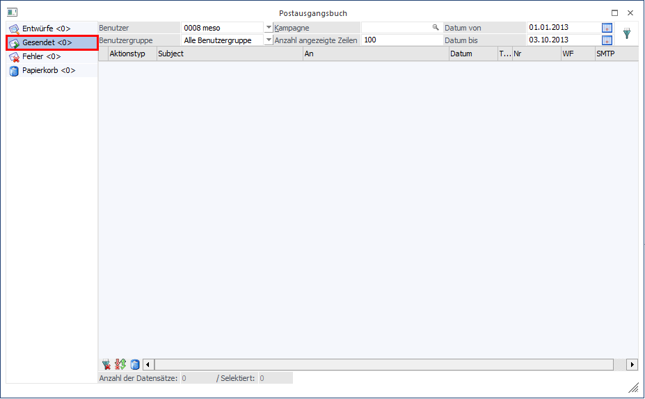
ü 2 Mail im Postausgangsbuch speichern: XML-Dateien und/oder PDF-Dateien werden im Postausgangsbuch im Ordner "Entwürfe" abgelegt und können von dort versandt werden.
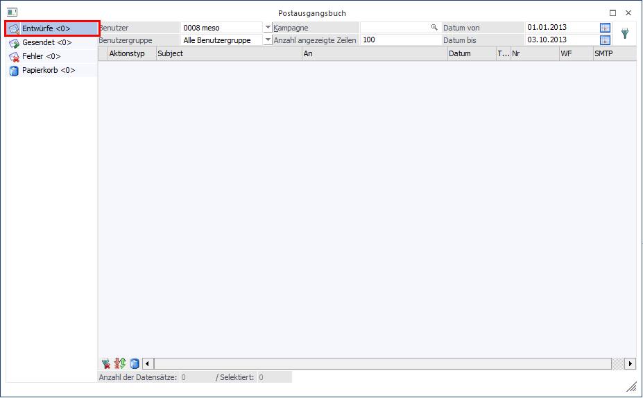
In beiden Varianten des Mailversands darf das Postausgangsbuch in keiner "anderen" Applikation geöffnet sein. Dazu erfolgt auch ein entsprechender Hinweis;

Hinweis:
Zum Versand der Mails wird jene Mailadresse herangezogen, die in der Auswahllistbox der konfigurierten Mailadressen ausgewählt wird. Diese Mailadresse hat zu diesem Zeitpunkt die höchste Priorität. D.h. auch wenn zusätzlich z.B. das Postausgangsbuch geöffnet wird, und dort ebenfalls eine "eigene" Mailadresse dafür hinterlegt wäre, bleibt trotzdem in der Auswahllistbox jene Mailadresse erhalten, die zum menüpunkt "E-Billing/Export" angegeben wurde.
Ø Kopie an eMail-Adresse
In diesem Feld kann eine E-Mail-Adresse angegeben werden, an die eine Kopie des exportierten Beleges gesandt werden soll.
Ø Stylesheet per Mail versenden
Beim Versand der Belege per E-Mail kann auch das angegebene Stylesheet mit versandt werden. Dazu muss diese Option aktiviert werden.
Ø Versand inkl. Anhänge
Wird diese Option aktiviert, so wird im Register "Ausgabe" eine zusätzliche Tabelle mit den vorhandenen Archiveinträgen zum jeweiligen Beleg angezeigt (Archiveinträge die zum Beleg hinzugefügt wurden). Standardmäßig ist darin bei allen vorhandenen Archiveinträgen die Option "Auswahl" gesetzt. Dadurch werden diese Archiveinträge entsprechend beim Mailversand mit einbezogen.
Ø Textbaustein verwenden
Um für den Mailversand (für den Mailtext) einen Textbaustein verwenden zu können, muss diese Option aktiviert werden.
Ø Textbaustein
In diesem Feld kann der Name eines Textbausteines (zu finden im WinLine-START Programm) angegeben werden, der als Mailtext verwendet werden soll. Zur Unterstützung steht dazu der Textbaustein-Matchcode zur Verfügung.
Ø Text
Im Feld "Text" kann jener Text hinterlegt werden, der beim Mailversand der Dokumente herangezogen werden soll. Diese Eingabemöglichkeit steht nicht zur Verfügung, wenn bereits ein Textbaustein als Mailtext verwendet wird.
Ø Grafik per Mail versenden
Sollte eine Grafik beim Mailversand der Belege als eigene Datei mit geschickt werden, muss zum einen diese Option aktiviert werden, und im Eingabefeld der Grafik der (lokale) Pfad sowie der Dateiname der Grafik angegeben werden. Z.B. F:\Mesonic\WinLine\Grafiken\Firmenlogo_small.gif
Ø Serieller Versand
Durch Aktivieren dieser Option erfolgt der Versand der einzelnen Mails nacheinander. Im Gegensatz dazu (bei nicht aktivierter Option) werden die Mails gleichzeitig (parallel) verschickt. Diese Option ist nur verfügbar, wenn für den Mailversand die Einstellung "1 Mail sofort senden" gewählt ist.
Hinweis:
Sollte es beim Versenden der Mails zu einem Fehlerfall kommen (Server nicht erreichbar o.ä.), erfolgt eine
entsprechende Meldung.

Im Postausgangsbuch wird das Mail bei dem es zum Fehlerfall gekommen ist im Ordner "Fehler" abgelegt, alle folgenden Mails im Ordner "Entwürfe". Von dort können die Mails in weiterer Folge erneut versendet werden.
Ø An selben Empfänger
Durch Aktivieren dieser Option wird festgelegt, dass der Mailversand an jene Mailadresse(n) erfolgt, die im nachfolgenden Feld "Empfängeradresse" angegeben wird. Die Spalte "eMail-Adresse" im Register "Ausgabe" wird bei aktivierter Option ausgeblendet.
Ø Empfängeradresse
Dieses Feld wird zur Eingabe freigeschalten, wenn die Option "An selben Empfänger" aktiviert wurde. Es kann hier eine, bzw. durch Strichpunkt getrennt, mehrere Mailadressen angegeben werden. Dieser Eintrag ersetzt jenen aus dem Register "Ausgabe".
Buttons
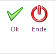
Ø OK
Durch Drücken des OK-Buttons (im Register "EBInvoice-Einstellungen") werden die getroffenen Einstellungen gespeichert und automatisch ins Register "Ausgabe" gewechselt.
Ø Ende
Durch Drücken des Ende-Buttons wird das Fenster geschlossen. Alle getätigten, und nicht gespeicherten Eingaben werden dabei verworfen.

{kind=link}